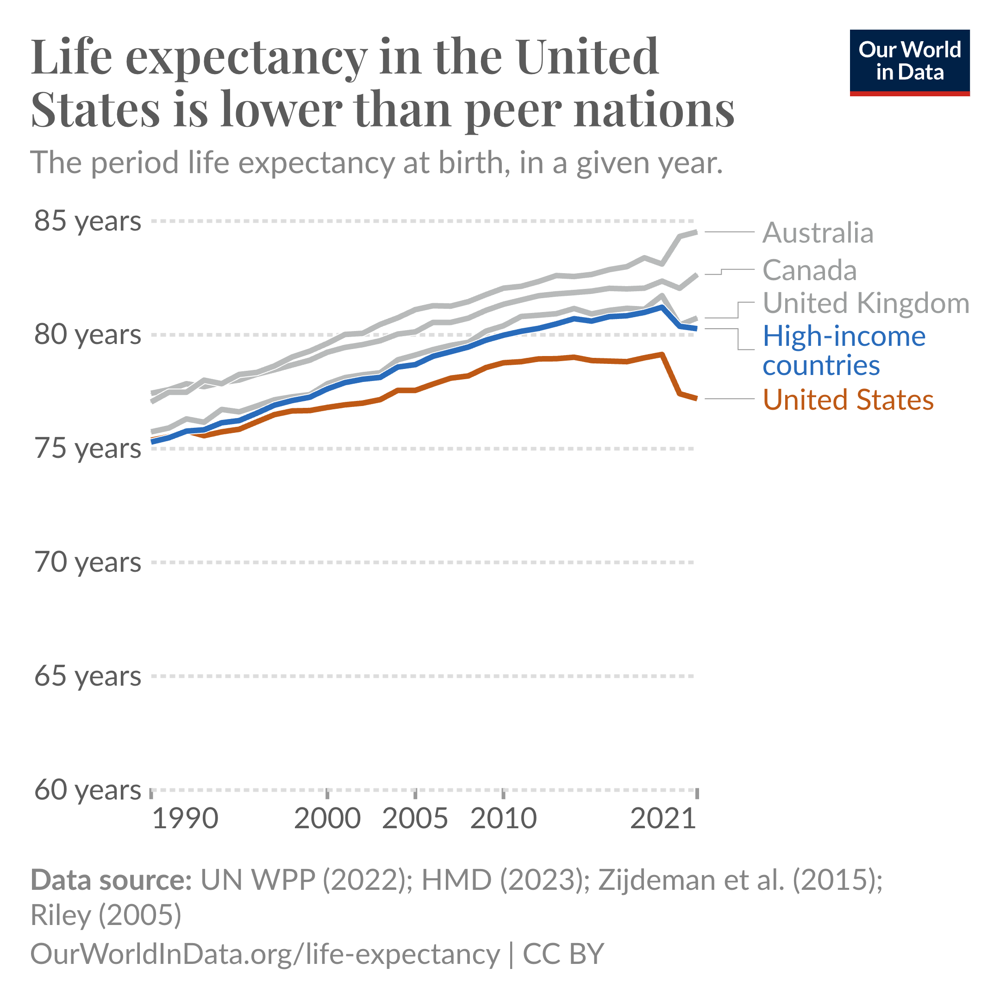
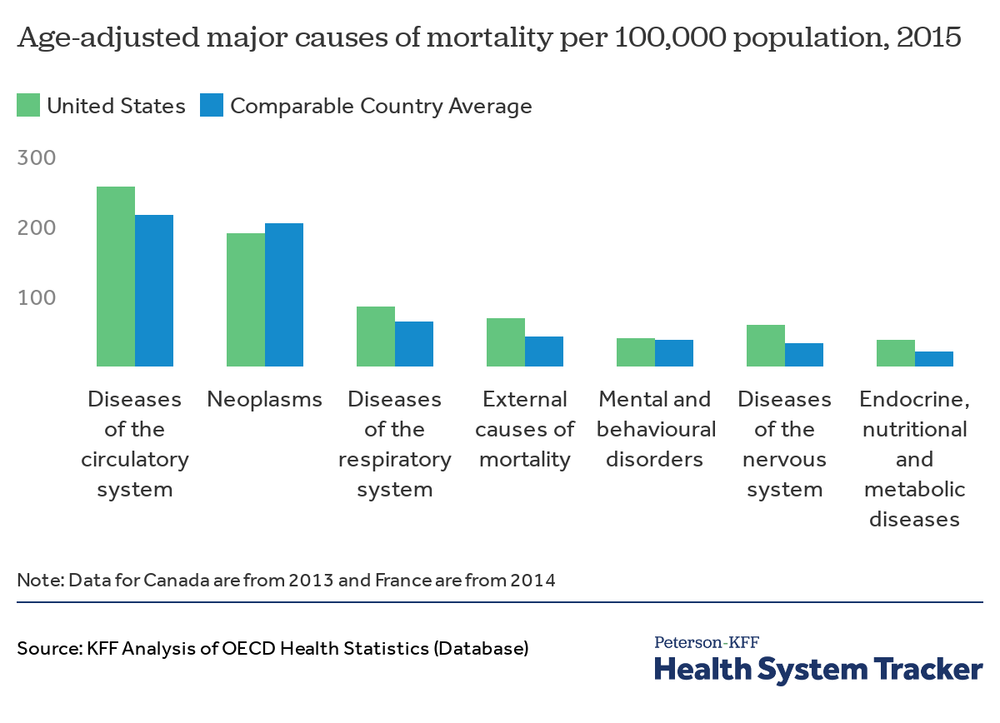
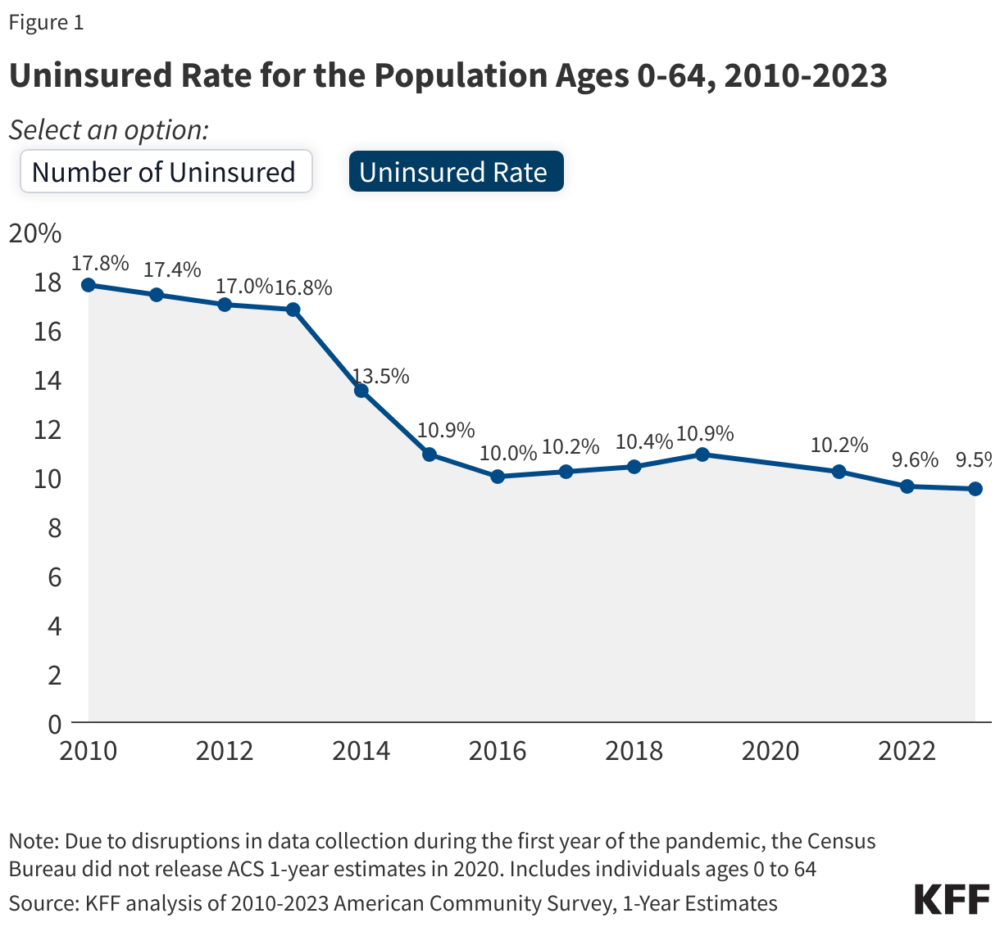

# A tibble: 4 × 5
person wage educ exper training
<dbl> <dbl> <dbl> <dbl> <dbl>
1 1 17.2 12 10 2
2 2 11.9 16 1 0
3 3 23.2 16 2 1
4 4 18.4 10 15 3EC 325: Econometrics
Colby College
2026-01-01
I am a recent PhD from UMass Amherst. My research focuses on the relationship between public/economic policy and maternal, infant, and child health and racial/ethnic health disparities.
This is my first year at Colby!
Econometrics: “…statistical methods for estimating economic relationships, testing economic theories, and evaluating and implementing government and business policy.”
Or, in my opinion,
Econometrics: The practice of using statistical, quantitative methods to study social phenomena and provide insights into public policy
Modern econometrics has really focused on identifying the causal effects of social phenomena/policy as opposed to correlations

Life expectancy in the US vs. peer countries

Mortality rates by type

Uninsured rates overtime
Discuss with a classmate
Econometrics can help us answer this question!
Let’s say we want to know what the effect of on-the-job training has on your wage.
What steps would we need to take to answer this question?
Step 1: Write an econometric model
One example of an econometric model would be (we will learn what this equation means later!):
\[ wage = \beta_{0} + \beta_{1} educ + \beta_{2} exper + \beta_{3} training + \epsilon \]
Step 2: Find and explore the data (easier said then done!)
Many different types of data:
# A tibble: 4 × 5
person wage educ exper training
<dbl> <dbl> <dbl> <dbl> <dbl>
1 1 17.2 12 10 2
2 2 11.9 16 1 0
3 3 23.2 16 2 1
4 4 18.4 10 15 3Step 3: Estimate the relationship
Call:
lm(formula = wage ~ educ, data = test_data_2)
Residuals:
Min 1Q Median 3Q Max
-0.42418 -0.04713 -0.00786 0.04971 0.29730
Coefficients:
Estimate Std. Error t value Pr(>|t|)
(Intercept) 1.199694 0.070398 17.04 <2e-16 ***
educ 0.118062 0.006873 17.18 <2e-16 ***
---
Signif. codes: 0 '***' 0.001 '**' 0.01 '*' 0.05 '.' 0.1 ' ' 1
Residual standard error: 0.1116 on 48 degrees of freedom
Multiple R-squared: 0.8601, Adjusted R-squared: 0.8572
F-statistic: 295 on 1 and 48 DF, p-value: < 2.2e-16Step 4: Interpret the estimates
What does our estimate mean?
Step 4: Interpret the estimates
What does our estimate mean?
In this course, we will learn how to do all four of these steps!
Much of the econometric process is done using specialized statistical software.
We use this software to:
In this class, we will focus our learning on the R programming language
Why R?
R Studio: An integrated development environment (IDE) designed for working with the R programming language. It provides a user-friendly interface and a set of tools that make it easier to write, run, and manage R code and projects.
In this class, we will focus our learning on the R programming language
There are instructions on how to install this software in the appendix of the Lecture Notes. Review them and install R and R Studio as soon as you can!
TA:
TA Help Hours:
Reliable access to a computer (talk to me if this is a concern!)
A Github account to access the course materials
I use Git and GitHub to host all course content (except assignments, which are on Moodle)
Why use Git/GitHub?
You are required the read the lecture notes for this course before we cover the unit in class
The notes are available either in the Github Repo or at: https://www.raymondcaraher.com/ec325/
Lecture notes include optional multiple choice review questions
These textbooks are easy to find are this course content is heavily inspired by them:
Introductory Econometrics: A Modern Approach by Jeffrey M. Wooldridge (2019). The 7th edition is the most recent, but any edition 5 or above will work. We will primarily use this text for part of the course more reliant on statistical theory.
Real Econometrics by Michael Bailey (2020). This is a good, more “applied” version of the Wooldridge textbook.
Mastering ’Metrics by Joshua D. Angrist and Jörn-Steffen Pischke (2015). This text is an excellent companion to the other texts, but is not like a traditional textbook.
If you don’t have either one of these, let me know!
Your grade will be determined by:
| Assessment | Weight |
|---|---|
| Concept Checks | 10% |
| Problem Sets | 30% |
| Midterm Exam | 10% |
| Final Exam | 15% |
| Final Project | 30% |
| Engaged Learning | 5% |
No collaboration allowed on concept checks. Come to office hours/email if you have questions!
You can (and are encouraged!) to work in groups on problem sets.
AI tools can be useful for coding questions, but over-reliance can become a crutch. The AI policy for this course is:
If you choose to use AI, Colby recommends Google Gemini with your Colby account.
Active learning is necessary to learn econometrics and counts as part of your grade.
What counts:
A research project completed in groups of 3-4 students. I will form groups based on your shared subfield interests, then groups will narrow down on a specific research question.
This project will be a considerable amount of work! We will have check-ins throughout the semester to make sure things are going smoothly.
You will have to turn in:
EC325 | Unit 1 | Introduction